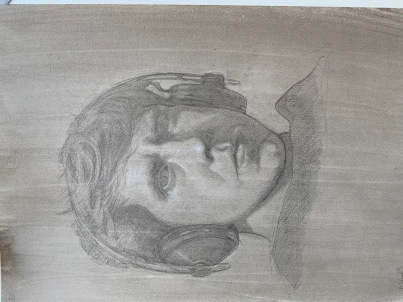

| Robin Bartlett
Faculty of Mathematics and Computer Science Einsteinstraße 62 48149 Münster Germany Email: ~@uni-muenster.de (replace ~ by rbartlett) I am currently a post-doc in Münster working in Eugen Hellmann's group. Here is my CV (updated January 2023). |

|